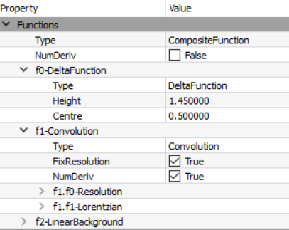

Essentially it is a dirac delta function added to a Lorentzian convoluted with a resolution, plus linear background.
I would assume the function is structured as follows in the Fit Function panel:

Using Levenberg-Marquadt as a minimizer, I do not seem to run into any errors. But when I attempt to use FABADA, typically I get the following error:
Error in execution of algorithm Fit:
Parameter value is NaN.
I have two questions, is my fit function properly formatted in Mantid and secondly, is there a way to troubleshoot for the Python error message above?
Conv fit has been helpful, just a few questions, how can i select a function other than those given under the “Fit Type” drop-down menu? As in what if i wanted to fit 3 Lorentzians than the max of 2 shown.
And also, where can i see the PDF apart from the chi-squared output? Usually with FABADA i can see this
ConvFit does not have a 3 Lor option. For that I use our original Bayes program available on the Interface Indirect>Bayes>Quasi - only available on Windows. This will give probability of 1,2 & 3 peaks. In 30 years of experience I have only come across 3 peaks on 1 occasion!!
I will check on PDF in ConvFit, we are slowly getting used to using Fabada as it is quite new and still under development.
Just realised that in the eqtn you give, the delta function is not in the convolution ie it should be (A0delta + A1Lor)*Res. What interface did you use - Fit wizard or Multi data set? I’ve tried both and they run in Fabada giving PDF output. However for MultiData when doing all spectra sequentially the workspaces for PDF get over-written. I will flag this with Mantid team as a bug.
Hello, Sorry for the delay, after doing some test runs i can confirm you are correct, having the delta function inside the convolution set does get rid of the error. I have tried both Fit wizard and indirect data analysis, and they do output a PDF if FABADA is used as the minimizer.
I have not tried Multidata set but i did notice that PDFs can get easily overwritten if not careful.
ConvFit only lacks a 3 Lorentzian function but for my intents and purposes it may not be needed at the moment. I assume that Fit wizard will be able to do this if necessary.
Thank you very much for the help, will email you for any concerns with regards to the program functions